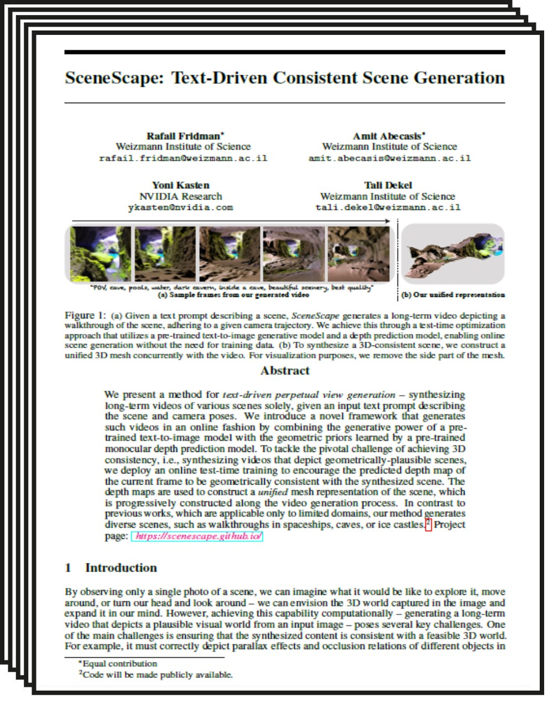
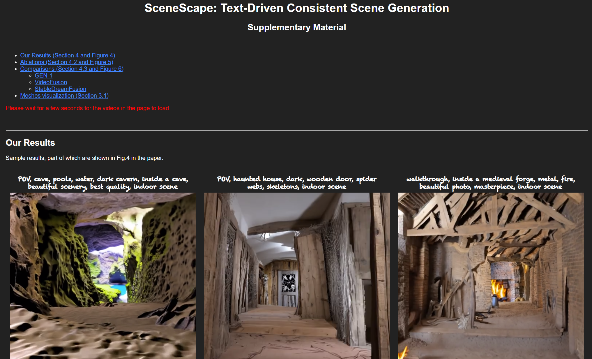

Abstract
We introduce DreamDrone, an innovative method for generating unbounded flythrough scenes from textual prompts. Central to our method is a novel feature-correspondence-guidance diffusion process, which utilizes the strong correspondence of intermediate features in the diffusion model. Leveraging this guidance strategy, we further propose an advanced technique for editing the intermediate latent code, enabling the generation of subsequent novel views with geometric consistency. Extensive experiments reveal that DreamDrone significantly surpasses existing methods, delivering highly authentic scene generation with exceptional visual quality. This approach marks a significant step in zero-shot perpetual view generation from textual prompts, enabling the creation of diverse scenes, including natural landscapes like oases and caves, as well as complex urban settings such as Lego-style street views. Code is available at https://github.com/HyoKong/DreamDrone.
How It Works
Starting from a real or generated RGBD ($I$, $D$) image at the current view, we apply DDIM backward steps to obtain intermediate latent code $x_{t_1}$ at timestep $t_1$ using a pre-trained U-Net model. A low-pass wrapping strategy is applied to generate latent code for the next novel view. A few more DDPM forward steps from timestep $t_1$ to $t_2$ are followed for enlarging the degree of freedom w.r.t. the wrapped latent code. In the reverse progress, we apply pre-trained U-Net to recover the novel view from $x_{t_2}'$. The cross-view self-attention module and feature-correspondence guidance are applied to maintain consistency between $x_{t_2}$ and $x_{t_2}'$. The right side shows the wrapped images and our generated novel view $I'$. Our method greatly alleviates blurring, in-consistency, and distortion. The overall pipeline is zero-shot and training-free.

Results
Monocular depth predictions tend to be inconsistent, even across nearby video frames. That is, there is no guarantee the predicted depth of the frame would be well aligned with the current scene geometry. We mitigate this problem by taking a test-time training approach to finetune the depth prediction model to be consistent as possible with the current scene geometry.
walkthrough, an opulent hotel...
walkthrough, an opulent hotel with long, carpeted hallways, beautiful photo, masterpiece, indoor scene
walkthrough, an opulent hotel...
walkthrough, an opulent hotel with long, carpeted hallways, beautiful photo, masterpiece, indoor scene
Paper
|  |
SceneScape: Text-Driven Consistent Scene Generation
|
Supplementary Material
|  |
Bibtex
Acknowledgments
The website design is borrowed from this website. Thanks!